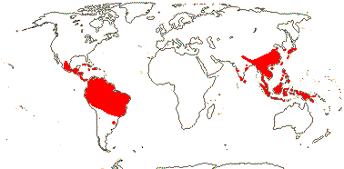
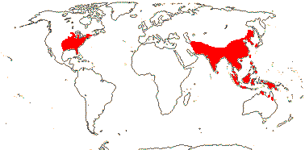
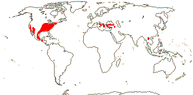
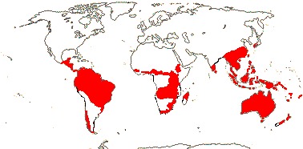

EMBRYOPSIDA Pirani & Prado
Gametophyte dominant, independent, multicellular, not motile, initially ±globular; showing gravitropism; acquisition of phenylalanine lysase [PAL], microbial terpene synthase-like genes +, triterpenoids produced by CYP716 enzymes, phenylpropanoid metabolism [lignans +, flavonoids + (absorbtion of UV radiation)], xyloglucans in primary cell wall, side chains charged; plant poikilohydrous [protoplasm dessication tolerant], ectohydrous [free water outside plant physiologically important]; thalloid, leafy, with single-celled apical meristem, tissues little differentiated, rhizoids +, unicellular; chloroplasts several per cell, pyrenoids 0; glycolate metabolism in leaf peroxisomes [glyoxysomes]; centrioles/centrosomes in vegetative cells 0, microtubules with γ-tubulin along their lengths [?here], interphase microtubules form hoop-like system; metaphase spindle anastral, predictive preprophase band + [with microtubules and F-actin; where new cell wall will form], phragmoplast + [cell wall deposition centrifugal, from around the anaphase spindle], plasmodesmata +; antheridia and archegonia jacketed, surficial; blepharoplast +, centrioles develop de novo, bicentriole pair coaxial, separate at midpoint, centrioles rotate, associated with basal bodies of cilia, multilayered structure + [4 layers: L1, L4, tubules; L2, L3, short vertical lamellae] (0), spline + [tubules from L1 encircling spermatid], basal body 200-250 nm long, associated with amorphous electron-dense material, microtubules in basal end lacking symmetry, stellate array of filaments in transition zone extended, axonemal cap 0 [microtubules disorganized at apex of cilium]; male gametes [spermatozoids] with a left-handed coil, cilia 2, lateral; oogamy; sporophyte multicellular, cuticle +, plane of first cell division transverse [with respect to long axis of archegonium/embryo sac], sporangium and upper part of seta developing from epibasal cell [towards the archegonial neck, exoscopic], with at least transient apical cell [?level], initially surrounded by and dependent on gametophyte, placental transfer cells +, in both sporophyte and gametophyte, wall ingrowths develop early; suspensor/foot +, cells at foot tip somewhat haustorial; sporangium +, single, terminal, dehiscence longitudinal; meiosis sporic, monoplastidic, MTOC [MTOC = microtubule organizing centre] associated with plastid, sporocytes 4-lobed, cytokinesis simultaneous, preceding nuclear division, quadripolar microtubule system +; wall development both centripetal and centrifugal, 1000 spores/sporangium, sporopollenin in the spore wall laid down in association with trilamellar layers [white-line centred lamellae; tripartite lamellae]; nuclear genome size [1C] <1.4 pg, main telomere sequence motif TTTAGGG, LEAFY and KNOX1 and KNOX2 genes present, ethylene involved in cell elongation; chloroplast genome with close association between trnLUAA and trnFGAA genes [precursors for starch synthesis], tufA gene moved to nucleus; mitochondrial trnS(gcu) and trnN(guu) genes +.
Many of the bolded characters in the characterization above are apomorphies of subsets of streptophytes along the lineage leading to the embryophytes, not apomorphies of crown-group embryophytes per se.
All groups below are crown groups, nearly all are extant. Characters mentioned are those of the immediate common ancestor of the group, [] contains explanatory material, () features common in clade, exact status unclear.
STOMATOPHYTES
Abscisic acid, L- and D-methionine distinguished metabolically; pro- and metaphase spindles acentric; sporophyte with polar transport of auxins, class 1 KNOX genes expressed in sporangium alone; sporangium wall 4≤ cells across [≡ eusporangium], tapetum +, secreting sporopollenin, which obscures outer white-line centred lamellae, columella +, developing from endothecial cells; stomata +, on sporangium, anomocytic, cell lineage that produces them with symmetric divisions [perigenous]; underlying similarities in the development of conducting tissue and of rhizoids/root hairs; spores trilete; shoot meristem patterning gene families expressed; MIKC, MI*K*C* genes, post-transcriptional editing of chloroplast genes; gain of three group II mitochondrial introns, mitochondrial trnS(gcu) and trnN(guu) genes 0.
[Anthocerophyta + Polysporangiophyta]: gametophyte leafless; archegonia embedded/sunken [only neck protruding]; sporophyte long-lived, chlorophyllous; cell walls with xylans.
POLYSPORANGIOPHYTA†
Sporophyte well developed, branched, branching apical, dichotomous, potentially indeterminate; hydroids +; stomata on stem; sporangia several, terminal; spore walls not multilamellate [?here].
TRACHEOPHYTA†
Vascular tissue + [tracheids, walls with bars of secondary thickening].
EXTANT TRACHEOPHYTA / VASCULAR PLANTS
Sporophyte with photosynthetic red light response, stomata open in response to blue light; plant homoiohydrous [water content of protoplasm relatively stable]; control of leaf hydration passive; plant endohydrous [physiologically important free water inside plant]; (condensed or nonhydrolyzable tannins/proanthocyanidins +); xyloglucans with side chains uncharged [?level], in secondary walls of vascular and mechanical tissue; lignins +; stem apex multicellular, with cytohistochemical zonation, plasmodesmata formation based on cell lineage; tracheids +, in both protoxylem and metaxylem, G- and S-types; sieve cells + [nucleus degenerating]; endodermis +; leaves/sporophylls spirally arranged, blades with mean venation density ca 1.8 mm/mm2 [to 5 mm/mm2], all epidermal cells with chloroplasts; sporangia adaxial, columella 0; tapetum glandular; ?position of transfer cells; MTOCs not associated with plastids, basal body 350-550 nm long, stellate array in transition region initially joining microtubule triplets; suspensor +, shoot apex developing away from micropyle/archegonial neck [from hypobasal cell, endoscopic], root lateral with respect to the longitudinal axis of the embryo [plant homorhizic].
[MONILOPHYTA + LIGNOPHYTA]Sporophyte endomycorrhizal [with Glomeromycota]; growth ± monopodial, branching spiral; roots +, endogenous, positively geotropic, root hairs and root cap +, protoxylem exarch, lateral roots +, endogenous; G-type tracheids +, with scalariform-bordered pits; leaves with apical/marginal growth, venation development basipetal, growth determinate; sporangium dehiscence by a single longitudinal slit; cells polyplastidic, MTOCs diffuse, perinuclear, migratory; blepharoplasts +, paired, with electron-dense material, centrioles on periphery, male gametes multiciliate; chloroplast long single copy ca 30kb inversion [from psbM to ycf2]; mitochondrion with loss of 4 genes, absence of numerous group II introns; LITTLE ZIPPER proteins.
LIGNOPHYTA†
Sporophyte woody; stem branching lateral, meristems axillary; lateral root origin from the pericycle; cork cambium + [producing cork abaxially], vascular cambium bifacial [producing phloem abaxially and xylem adaxially].
SEED PLANTS†
Plants heterosporous; megasporangium surrounded by cupule [i.e. = unitegmic ovule, cupule = integument]; pollen lands on ovule; megaspore germination endosporic [female gametophyte initially retained on the plant].
EXTANT SEED PLANTS / SPERMATOPHYTA
Plant evergreen; nicotinic acid metabolised to trigonelline, (cyanogenesis via tyrosine pathway); microbial terpene synthase-like genes 0; primary cell walls rich in xyloglucans and/or glucomannans, 25-30% pectin [Type I walls]; lignin chains started by monolignol dimerization [resinols common], particularly with guaiacyl and p-hydroxyphenyl [G + H] units [sinapyl units uncommon, no Maüle reaction]; root stele diarch to pentarch, xylem and phloem originating on alternating radii, cork cambium deep seated; stem apical meristem complex [with quiescent centre, etc.], plasmodesma density in SAM 1.6-6.2[mean]/μm2 [interface-specific plasmodesmatal network]; eustele +, protoxylem endarch, endodermis 0; wood homoxylous, tracheids and rays alone, tracheid/tracheid pits circular, bordered; mature sieve tube/cell lacking functioning nucleus, sieve tube plastids with starch grains; phloem fibres +; cork cambium superficial; leaf nodes 1:1, a single trace leaving the vascular sympodium; leaf vascular bundles amphicribral; guard cells the only epidermal cells with chloroplasts, stomatal pore with active opening in response to leaf hydration, control by abscisic acid, metabolic regulation of water use efficiency, etc.; axillary buds +, exogenous; prophylls two, lateral; leaves with petiole and lamina, development basipetal, lamina simple; sporangia borne on sporophylls; spores not dormant; microsporophylls aggregated in indeterminate cones/strobili; grains monosulcate, aperture in ana- position [distal], primexine + [involved in exine pattern formation with deposition of sporopollenin from tapetum there], exine and intine homogeneous, exine alveolar/honeycomb; ovules with parietal tissue [= crassinucellate], megaspore tetrad linear, functional megaspore single, chalazal, sporopollenin 0; gametophyte ± wholly dependent on sporophyte, development initially endosporic [apical cell 0, rhizoids 0, etc.]; male gametophyte with tube developing from distal end of grain, male gametes two, developing after pollination, with cell walls; female gametophyte initially syncytial, walls then surrounding individual nuclei; embryo cellular ab initio, suspensor short-minute, embryonic axis straight [shoot and root at opposite ends; plant allorhizic], cotyledons 2; embryo ± dormant; chloroplast ycf2 gene in inverted repeat, trans splicing of five mitochondrial group II introns, rpl6 gene absent; whole nuclear genome duplication [ζ - zeta - duplication], two copies of LEAFY gene, PHY gene duplications [three - [BP [A/N + C/O]] - copies], 5.8S and 5S rDNA in separate clusters.
ANGIOSPERMAE / MAGNOLIOPHYTA
Lignans, O-methyl flavonols, dihydroflavonols, triterpenoid oleanane, apigenin and/or luteolin scattered, [cyanogenesis in ANA grade?], lignin also with syringyl units common [G + S lignin, positive Maüle reaction - syringyl:guaiacyl ratio more than 2-2.5:1], hemicelluloses as xyloglucans; root cap meristem closed (open); pith relatively inconspicuous, lateral roots initiated immediately to the side of [when diarch] or opposite xylem poles; origin of epidermis with no clear pattern [probably from inner layer of root cap], trichoblasts [differentiated root hair-forming cells] 0, hypodermis suberised and with Casparian strip [= exodermis]; shoot apex with tunica-corpus construction, tunica 2-layered; starch grains simple; primary cell wall mostly with pectic polysaccharides, poor in mannans; tracheid:tracheid [end wall] plates with scalariform pitting, wood parenchyma +; sieve tubes enucleate, sieve plate with pores (0.1-)0.5-10< µm across, cytoplasm with P-proteins, not occluding pores of plate, companion cell and sieve tube from same mother cell; ?phloem loading/sugar transport; nodes 1:?; dark reversal Pfr → Pr; protoplasm dessication tolerant [plant poikilohydric]; stomata brachyparacytic [ends of subsidiary cells level with ends of pore], outer stomatal ledges producing vestibule, reduction in stomatal conductance with increasing CO2 concentration; lamina formed from the primordial leaf apex, margins toothed, development of venation acropetal, overall growth ± diffuse, secondary veins pinnate, fine venation hierarchical-reticulate, (1.7-)4.1(-5.7) mm/mm2, vein endings free; flowers perfect, pedicellate, ± haplomorphic, protogynous; parts free, numbers variable, development centripetal; P +, ?insertion, members each with a single trace, outer members not sharply differentiated from the others, not enclosing the floral bud; A many, filament not sharply distinguished from anther, stout, broad, with a single trace, anther introrse, tetrasporangiate, sporangia in two groups of two [dithecal], each theca dehiscing longitudinally by a common slit, ± embedded in the filament, walls with at least outer secondary parietal cells dividing, endothecium +, cells elongated at right angles to long axis of anther; tapetal cells binucleate; microspore mother cells in a block, microsporogenesis successive, walls developing by centripetal furrowing; pollen subspherical, tectum continuous or microperforate, ektexine columellate, endexine lamellate only in the apertural regions, thin, compact, intine in apertural areas thick, pollenkitt +; nectary 0; carpels present, superior, free, several, ascidiate [postgenital occlusion by secretion], stylulus at most short [shorter than ovary], hollow, cavity not lined by distinct epidermal layer, stigma ± decurrent, carinal, dry; suprastylar extragynoecial compitum +; ovules few [?1]/carpel, marginal, anatropous, bitegmic, micropyle endostomal, outer integument 2-3 cells across, often largely subdermal in origin, inner integument 2-3 cells across, often dermal in origin, parietal tissue 1-3 cells across, nucellar cap?; megasporocyte single, hypodermal, functional megaspore lacking cuticle; female gametophyte lacking chlorophyll, not photosynthesising, four-celled [one module, nucleus of egg cell sister to one of the polar nuclei]; ovule not increasing in size between pollination and fertilization; pollen grains land on stigma, bicellular at dispersal, mature male gametophyte tricellular, germinating in less than 3 hours, pollen tube elongated, unbranched, growing between cells, growth rate (20-)80-20,000 µm/hour, apex of pectins, wall with callose, lumen with callose plugs, penetration of ovules via micropyle [porogamous], whole process takes ca 18 hours, distance to first ovule 1.1-2.1 mm; male gametes lacking cell walls, ciliae 0, siphonogamy; double fertilization +, ovules aborting unless fertilized; P deciduous in fruit; mature seed much larger than fertilized ovule, small [], dry [no sarcotesta], exotestal; endosperm +, cellular, development heteropolar [first division oblique, micropylar end initially with a single large cell, divisions uniseriate, chalazal cell smaller, divisions in several planes], copious, oily and/or proteinaceous, embryo short [<¼ length of seed]; plastid and mitochondrial transmission maternal; Arabidopsis-type telomeres [(TTTAGGG)n]; nuclear genome size [1C] <1.4 pg [mean 1C = 18.1 pg, 1 pg = 109 base pairs], whole nuclear genome duplication [ε/epsilon event]; ndhB gene 21 codons enlarged at the 5' end, single copy of LEAFY and RPB2 gene, knox genes extensively duplicated [A1-A4], AP1/FUL gene, palaeo AP3 and PI genes [paralogous B-class genes] +, with "DEAER" motif, SEP3/LOFSEP and three copies of the PHY gene, [PHYB [PHYA + PHYC]]; chloroplast chlB, -L, -N, trnP-GGG genes 0.
[NYMPHAEALES [AUSTROBAILEYALES [[CHLORANTHALES + MAGNOLIIDS] [MONOCOTS [CERATOPHYLLALES + EUDICOTS]]]]]: wood fibres +; axial parenchyma diffuse or diffuse-in-aggregates; pollen monosulcate [anasulcate], tectum reticulate-perforate [here?]; ?genome duplication; "DEAER" motif in AP3 and PI genes lost, gaps in these genes.
[AUSTROBAILEYALES [[CHLORANTHALES + MAGNOLIIDS] [MONOCOTS [CERATOPHYLLALES + EUDICOTS]]]]: phloem loading passive, via symplast, plasmodesmata numerous; vessel elements with scalariform perforation plates in primary xylem; essential oils in specialized cells [lamina and P ± pellucid-punctate]; tension wood + [reaction wood: with gelatinous fibres, G-fibres, on adaxial side of branch/stem junction]; tectum reticulate; anther wall with outer secondary parietal cell layer dividing; nucellar cap + [character lost where in eudicots?]; 12BP [4 amino acids] deletion in P1 gene.
[[CHLORANTHALES + MAGNOLIIDS] [MONOCOTS [CERATOPHYLLALES + EUDICOTS]]] / MESANGIOSPERMAE: benzylisoquinoline alkaloids +; sesquiterpene synthase subfamily a [TPS-a] [?level], polyacetate derived anthraquinones + [?level]; outer epidermal walls of root elongation zone with cellulose fibrils oriented transverse to root axis; P more or less whorled, 3-merous [?here]; pollen tube growth intra-gynoecial; extragynoecial compitum 0; carpels plicate [?here]; embryo sac bipolar, 8 nucleate, antipodal cells persisting; endosperm triploid.
[MONOCOTS [CERATOPHYLLALES + EUDICOTS]]: (extra-floral nectaries +); (veins in lamina often 7-17 mm/mm2 or more [mean for eudicots 8.0]); (stamens opposite [two whorls of] P); (pollen tube growth fast).
[CERATOPHYLLALES + EUDICOTS]: ethereal oils 0.
EUDICOTS: (Myricetin, delphinidin +), asarone 0 [unknown in some groups, + in some asterids]; root epidermis derived from root cap [?Buxaceae, etc.]; (vessel elements with simple perforation plates in primary xylem); nodes 3:3; stomata anomocytic; flowers (dimerous), cyclic; protandry common; K/outer P members with three traces, ("C" +, with a single trace); A ?, filaments fairly slender, anthers basifixed; microsporogenesis simultaneous, pollen tricolpate, apertures in pairs at six points of the young tetrad [Fischer's rule], cleavage centripetal, wall with endexine; G with complete postgenital fusion, stylulus/style solid [?here]; seed coat?
[PROTEALES [TROCHODENDRALES [BUXALES + CORE EUDICOTS]]]: (axial/receptacular nectary +).
Age. The approximate age for this node is 191 m.y. (Wu et al. 2014) or only 130.3 m.y.o. (Magallón et al. 2015). In many phylogenies Sabiaceae are adjacent to other members of the order along the eudicot spine, but whatever the topology, ages are rather younger. Estimates for a topology [Proteales [Sabiales [Buxales...]]] range from (143-)129, 126(-116) m.y. (Bell et al. 2010 for details), while Xue et al. (2012) estimate (126.4-)121.4(-110.2) m.y., Naumann et al. (2013) around 124.8 m.y., and Magallón et al. (2013) about 121.5 m. years. Wikström et al. (2001) estimated (150-)144-130(-124) m.y. for the stem Nelumbo, etc., clade and (145-)140, 128(-123) m.y. for stem-group Sabiaceae; Anderson et al. (2005) dated stem group Sabiaceae to 122-118 m.y.a., and it would be slightly older than the stem Nelumbo, etc., clade; Tank et al. (2015: Table S1) dated this clade to around 131.4 m.y.a, while around 144-140 m.y.o. was the estimate in Zeng et al. (2017).
Evolution: Divergence & Distribution. Endress (2011a) suggested that syncarpy might be a key innovation somewhere around here; optimization on the tree is not easy. Positioning of other apomorphies is also difficult. Although the androecial feature "stamens numerous, but then usually fasciculate and/or centrifugal" is placed at the [Rosids et al. + Asterids et al.] / Pentapetalae node, there is no particular reason why it should not be placed here. If CRABSCLAW expression is found in the nectaries of Sabiaceae and Proteaceae, this, to could be placed at this node (and it would also be interesting to look at what is going on in Buxaceae, too); along the same lines, sucrose synthesis and secretion is similar in the floral nectaries of the Brassicaceae and Solanaceae examined, which are extrastaminal and gynoecial nectaries respectively (Lin et al. 2014). See also the Pentapetalae page.
Chemistry, Morphology, etc. For the distinction between gynoecial (supposedly asterids only) and receptacular nectaries, see Smets (1988), Smets et al. (2003) and Erbar (2014: the two not always easy to distinguish); for a general survey of nectaries, see also Bernadello (2007). Nectary vascularization can vary between quite closely related taxa (e.g. Saxena 1973; de Paula et al. 2011).
PROTEALES Berchtold & J. Presl Main Tree.
Lamina margin serrate, ?tooth morphology; stigma dry; ovules 1-2/carpel, apical, pendulous, apotropous; seed coat?; endosperm development?, slight or 0, embryo long. - 4 families, 85 genera, 1,750 species.
Age. Sauquet et al. (2009b) suggest ages for this node of around 125-123.4 m.y., Magallón and Castillo (2009) suggest ca 122.8 and 123.6 m.y., the age in Magallón et al. (2015) is about 127.5 m.y. and that in Tank et al. (2015: Table S2) about 130.3 m.y., but the estimates in Foster et al. 2016a: q.v. for details), at ca 1441 m.y. and especially in Z. Wu et al. (2014), at ca 189 m.y.a., are considerably older.
Note: Boldface denotes possible apomorphies, (....) denotes a feature common in the clade, exact status uncertain, [....] includes explanatory material. Note that the particular node to which many characters, particularly the more cryptic ones, should be assigned is unclear. This is partly because homoplasy is very common, in addition, basic information for all too many characters is very incomplete, frequently coming from taxa well embedded in the clade of interest and so making the position of any putative apomorphy uncertain. Then there are the not-so-trivial issues of how character states are delimited and ancestral states are reconstructed (see above).
Evolution: Divergence & Distribution. Although the order is small, it is morphologically heterogeneous.
Phylogeny. For discussion of the monophyly and relationships of this very unexpected clade, see the eudicot node.
Previous Relationships. Thorne (2007) includes the order, variously broken up, along with Buxales, in his hetereogeneous Ranunculidae, however, most authors (e.g. Cronquist 1981; Takhtajan 1997) have not seen any connections at all between the four families here.
Classification. The inclusion of Sabiaceae in Proteales seems the sensible thing to do, assuming that its relationships continue to hold up (Y. Sun et al. 2015; A.P.G. IV 2016). Ovule number and embryo are similar in the combined group.
Includes Nelumbonaceae, Platanaceae, Proteaceae, Sabiaceae.
Synonymy: Proteinae Reveal - Meliosmales C. Y. Wu et al., Nelumbonales Martius, Platanales Martius, Sabiales Takhtajan - Nelumbonineae Shipunov - Proteanae Takhtajan, Nelumbonanae Reveal, Sabianae Doweld - Nelumbonidae Takhtajan - Nelumbonopsida Endlicher, Proteopsida Bartling
SABIACEAE Blume, nom. cons. Back to Main Tree
Evergreen (deciduous) trees or lianes; pentacyclic triterpenoids +, tanniniferous, benzylisoquinoline alkaloids?; vessel elements with simple to scalariform perforation plates, bars few (-30); wood with broad rays (0 - Sabia), (true tracheids +); (pits vestured - Meliosma); secondary phloem with broad or flaring rays; nodes complex unilacunar [Meliosma]; (sieve tube plastids also with protein crystalloids); cuticle wax crystalloids 0; stomata also paracytic; buds perulate or not; leaves spiral or two-ranked, simple to odd-pinnately compound, lamina vernation conduplicate [Meliosma], teeth ± spiny, or 0; flowers poly- or obliquely monosymmetric, (3-)5-merous; P = calyx + corolla, K C A opposite each other, K with single trace, C quincuncial [Sabia]; A basally adnate to C [Meliosma, Ophiocaryon], or 2 A fertile, with 2 basal processes and opposing C small, 2-3 A staminodial [Meliosma)], or A 5, bisporangiate, dithecal [Sabia], anther dehiscence transverse or valvate, filaments stout; pollen tricolporate; nectary receptacular, thin, ± lobed, annular; G connate, [2-3], completely closed (also secretory canal), when 2, oblique or median, styluli +, (marginal, ovary roof + - Ophiocaryon), short or not, stigmas punctate, wet, no papillae; compitum +; ovules 1 or 2/carpel, campylotropous or ± straight, uni(bi-)tegmic, integument 3-6 cells across [Sabia], nucellus apex exposed, intraovular hairs +; ?antipodal cells; fruit a (bilobed) ± drupelet to ± dry, loculicidally dehiscent, (stylulus excentric); endocarp usu. thick, (with long canal including vascular bundle); seed coat ?; endosperm helobial[?], chalazal endosperm haustorium +, embryo curved, (± spiral or coiled), cotyledons usually folded, embryo suspensor ± 0; n = 12, 16.
3[list]/140: Meliosma (100). South East Asia to Malesia, tropical America (map: from van Beusekom 1973; Sinimbu, pers. comm. Rafael Sühs). [Photo - Flower, Fruit.]
Age. Anderson et al. (2005) date crown group Sabiaceae at 119-91 m.y.a.; (135-)129, 114(-108) m.y. is the figure in Wikström et al. (2001).
Fossils identified as Sabiaceae are known from the Cretaceous-Cenomanian ca 98 m.y.a. (Insitiocarpus, c.f. Meliosma) and -Turonian (Sabia) of Europe (Knobloch & Mai 1986; Friis et al. 2011).
Synonymy: Meliosmaceae Meisner, Wellingtoniaceae Meisner
Evolution. Pollination Biology & Seed Dispersal. Most species of Meliosma have explosively dehiscent anthers that are held under tension by the complex staminodes, but there is also a kind of secondary pollination presentation in which pollen collects on the broad connective between the anthers sacs (Ronse De Craene & Wanntorp 2008 and Zúñiga 2015 for discussion; Ronse De Craene et al. (2015b) suggested that there was similar anther dehiscence in Sabia.
Chemistry, Morphology, etc. Sabiaceae are distinctive among members of the eudicot grade in that the perianth is differentiated into a calyx and corolla (Drinnan et al. 1994; Hoot et al. 1999) and there is a nectary that appears to be axial/receptacular (see Erbar 2014). However, the interpretation of the flower of Meliosma, especially of the nature of the perianth members, is difficult. Two sepals are smaller than the others and have been called bracteoles, as by Endress (2010c), who would then interpret the flower as being basically monosymmetric and trimerous, and the calyx whorl and the two whorls of both corolla and androecium as all alternating (one member of each is reduced). Others, e.g. Zúñiga (2015), incline to thinking of the flower as being 5-merous. According to Baillon (1874), the two carpels of Sabia are median; Warburg (1896) drew the two carpels of Meliosma as being oblique to the vertical axis of the flowers, but median to the plane between the two bracteoles; van Beusekom and van der Water (1989) show the carpels as being oblique both to the vertical axis and to the plane between the bracteoles, and the flower could be called obliquely monosymmetric. Wanntorp and Ronse de Craene (2007) illustrate the carpels as being more or less collateral, and Ronse de Craene (2010) as slightly oblique, bracteoles are not shown, but their position is described as being variable. Ronse De Craene et al. (2015a) note substantial differences in the floral development of the two species of Sabia they examined that they suggest is connected to the incorporation of a bracteole into the flower in S. japonica as a "sepal". See also Zúñiga (2015) for more discussion.
Ophiocaryon paradoxum has a coiled embryo; it is known as the snake nut.
For a general account, see Kubitzki (2006b), for chemistry, see Hegnauer (1973, 1990), and for wood anatomy, which is very variable, see Carlquist et al. (1993). For a revision of Sabia, see van de Water (1980).
Phylogeny. Relationships are [Sabia [[Meliosma alba + Ophiocaryon] other Meliosma]] (Zúñiga 2015: analyses of chloroplast/combined data, but not of nrITS).
[Nelumbonaceae [Platanaceae + Proteaceae]]: epidermal waxes with tubules [2/3], nonacosan-10-ol the main wax; nodes?; stipules sheathing [2/3]; connective extended beyond anther loculi.
Age. Wikström et al. (2001) estimate this node to be (143-)137, 125(-119) m.y.o., Bell et al. (2010) suggested ages (131-)116, 110(-101) m.y., Xue et al. (2012) ages of (122.8-)109.3(-75.2[- 16.3 m.y.!]) m.y., almost the age of fossils reliably assigned to Nelumbonaceae, Anderson et al. (2005) date this node to around 121-115 m.y.a. and Tank et al. (2015: Table S2) to about 119.8 m.y. ago. Magallón and Castillo (2009) and Magallón et al. (2015) suggest an age of around 117 m.y., Magallón et al. (2013) an age of around 105 m.y. and Xue et al. (2012) ages of (123.8-)ca 109(-16.3) m.y.; ca 121.7-119.2 m.y. is the age in Sauquet et al. (2009b), a low ca 82.6 m.y. in Naumann et al. (2013) and a high ca 177 m.y.a. in Z. Wu et al. (2014).
The oldest fossils of this clade (Nelumbonaceae, Nelumbites are around 107-99.6 m.y.a. (Upchurch & Wolfe 2005; see also Doyle & Endress 2010; Friis et al. 2011).
Evolution: Divergence & Distribution. Barthlott et al. (1996) noted that the cuticle waxes of Platanaceae and Nelumbonaceae were very different. However, Hayes et al. (2000) emphasised that there were only two sepals in Nelumbo, so the [Nelumbonaceae [Platanaceae + Proteaceae]] clade could be characterised as having dimerous flowers (see Doyle & Endress 2000 for Proteaceae). However, fossils assignable to Platanaceae are very variable in their floral morphologies, and some seem to have much more conventional, almost core eudicot-like flowers (von Balthazar & Schönenberger 2009). Fossils like Exnelumbites, from Late Cretaceous Mexico, have chloranthoid leaf teeth, that is, teeth with a glandular apex, a vein proceeding to the apex and joined by branches from above and below (Estrada-Ruiz et al. 2011). In the platanoid teeth of Platanus higher order veins approach but do not enter the apex, and so they are perhaps not so different from chloranthoid teeth (Doyle 2007; Estrada-Ruiz et al. 2011).
Chemistry, Morphology, etc. For variation in microsporogenesis and pollen morphology, see Furness and Rudall (2004) and Denk and Tekleva (2006); successive microsporogenesis has been reported from both Nelumbonaceae and Platanaceae.
NELUMBONACEAE A. Richard, nom. cons. Back to Proteales
Aquatic herbs, rhizomatous; latex, aporphine alkaloids +; radicle aborts; roots polyarch; cork?; plant with air canals; vascular cambium 0; vascular bundles scattered, lacking fibrous sheath; tubular P-protein and rod-shaped bodies +; nodes ?; laticifers +, articulated; cuticle waxes as clustered tubules; prophyll adaxial; leaves vertically two-ranked, in groups of three along the stem, sheathing cataphyll on one side then cataphyll and expanded leaf on the other side; leaf peltate, lamina with a central disc, vernation involute, venation actinodromous, midrib unbranched, with many primary veins, venation dichotomising, proceeding to margin, stipule sheathing, open; flowers ?axillary, protogynous, large [>4 cm across], with complex cortical vascular system; K[?] 2, 4, C 10-30, spiral; A many, from a ring meristem, development chaotic, at least outer extrorse, connective with a terminal appendage, filament often with more than one bundle; tapetal cells multinucleate; microsporogenesis also successive; membranous granular layer + [innermost endexine]; receptacle massive, with emergent druses; G (2-)10-30, carpels ascidiate, immersed in receptacle, occluded by secretion, pollen canal long-papillate, stylulus 0, stigma expanded, wet; ovule one/carpel, outer integument ca 30 cells across, inner integument 8-10 cells across, parietal tissue 3-5 cells across, nucellar cap ca 4 cells across, chalaza massive, postament +, hypostase +, funicular obturator +; antipodal cells multiplying, multinucleate, persistent; fruit a nutlet, with an apical pore; seed ?pachychalazal, testa undistinguished; embryo green, differentiated, cotyledon tubular but basically double, several leaf primordia; n = 8; radicle aborting, roots adventitious.
1[list]/1-2. Temperate, E. North America and E. Asia (map: from Fl. N. Am. III 1997; Fu & Hong 2000; Sculthorpe 1987; Wu 1983 [the last two include all Malesia and N. Australia, but not there in NW Australia, at least, in FloraBase 2006, the former also includes the Antilles and NW South America...]). [Photo - Nelumbo Flower © J. Manhart, Collection.]
Age. Crown-group Nelumbonaceae may be (6.5-)1.6(-0.1) m.y.o. (Xue et al. 2012).
Fossil Nelumbonaceae, as Nelumbites, the leaves with rather different venation but the flowers with the distinctive expanded floral receptacle of extant Nelumbo, are reported from the mid to late Albian (late Lower Cretaceous) ca 107-99.6 m.y.a. (Upchurch & Wolfe 2005; see also Doyle & Endress 2010; Friis et al. 2011; Doyle & Upchurch 2014).
Floral formula: * K 2, 4; C 10<; A many; G 10-30<.
Evolution: Divergence & Distribution. Fossils of Nelumbonaceae - leaves and fruits, although not connected - are known from southern Argentina in late Upper Cretaceous rocks of Campanian-Maastrichtian age (Gandolfo & Cuneo 2005). Other fossils are discussed by Estrada-Ruiz et al. (2011) and Friis et al. (2011).
Given the great age of the clade, 100 m.y. or substantially more, Nelumbo has been called a living fossil, at least from the molecular point of view, and it also shows considerable morphological stasis (Sanderson & Doyle 2001; Xue et al. 2012).
Ecology & Physiology. Vogel (2004a) provided a fascinating account of air circulation in Nelumbo, i.a. suggesting the air flows in different halves of the leaf in different directions, similarly in the petiole, and that air may move down one petiole and then up another two nodes behind on the stem (see also Matthews & Seymour 2006). The central disc has many stomata and is the site of air exchange for the petiolar canals (see also Estrada-Ruiz et al. 2011); if covered by water, air from the petiolar canals bubbles up through it. This circulation probably supplies the submersed roots and rhizomes with oxygen (c.f. Armstrong & Armstrong 2009).
Pollination Biology & Seed Dispersal. The flowers are thermogenic, starch breaking down in the expanded receptacle, and halictid bees and especially chrysomelid bettles are the likely pollinators (Vogel & Hadacek 2004; Watling et al. 2006; Li & Huang 2009; Dieringer et al. 2014). The progamic phase, the time between pollination and fertilization, is notably short, as in at least some other aquatic angiosperms (including Nymphaea: see Williams et al. 2010). The sharply pointed and often six-rayed epidermal druses on the surface of the receptacle may protect it against herbivores (Vogel 2004b).
Lotus fruits are noted for their longevity, and fruits 1350 ± 220 yrs old have been germinated (Shen-Miller et al. 1995). This may be connected with the chemical composition of the fruit wall which is distinctive in its high polysaccharide (galactose, mannose) and tannin content, compared to the lignin + cellulose composition of (e.g.) the seed coat of Nymphaeaceae (ven Bergen et al. 1997).
Genes & Genomes. For the chloroplast genome of Nelumbo, see Z. Wu et al. (2014).
Chemistry, Morphology, etc. Understanding how Nelumbo grows is difficult. The cataphylls more or less surround the stem and presumably represent the stipular portion of the leaf. Axillary branches show the same arrangement of leaves as described above, but with the addition of the prophyll which is on the same side of the branch as the first cataphyll. Flower buds develop in the axis of the second cataphyll, axillary branches in the axil of the expanded leaf, however, other interpretations are also possible. The sheathing stipule associated with the foliage leaf is open on the side of the stem opposite to the leaf insertion. For some literature on the growth pattern of Nelumbo, see Eichler (1878), Wignand and Dennert (1888), Miki (1926), and Esau and Kosakai (1975).
Vessels arise first in the roots, but are also found in the rhizome, and the trend of their specialisation is similar; this is the monocot pattern. Details of the root cortex of Nelumbonaceae differ considerably from those in Nymphaeales (Seago 2002). Although the vascular bundles are scattered in the stem, they are inside an endodermis.
Hayes et al. (2000) noted that the two sepals are inserted in the vertical plane; Moseley and Uhl (1985) found that there may be four, decussating sepals. Although the floral vasculature is complex because of the presence of rings of cortical bundles, the vascularization of individual parts of the flower is undistinguished; the sepals may, however, have but a single trace that quickly divides (Moseley & Uhl 1985). The stamens develop from an androecial ring, and they and the carpels may be irregularly whorled (Hayes et al. 2000). Cronquist (1981) described the stamens as being introrse-latrose; Endress (1995) as extrorse, Takhtajan (1997) as extrorse (the outer members) and introrse (the others). There is also disagreement over endosperm development which has been variously described as nuclear, cellular, or helobial, and over pollen morphology (Kreunen & Osborne 1999).
Some general information is taken from Williamson and Schneider (1993) and Hayes et al. (2000), for chemistry, see Hegnauer (1969, 1990: as Nymphaeaceae), for stamens, see Moseley (1958), and for embryology, etc., see Cook (1909), Khanna (1965) and Batygina et al. (1982).
Previous Relationships. In the past, Nelumbonaceae were usually associated with Nymphaeaceae (e.g. Cronquist 1981), the two having superficially similar flowers and vegetative body (both are "water lilies") - and it turns out that floral gene expression patterns in Nymphaea and Nelumbo are remarkably similar (Yoo et al. 2010). Takhtajan (1997) removed Nelumbonaceae from Nymphaeales, but placed them alone in his subclass Nelumbonidae. Both the morphology of the cuticle waxes and plant chemistry suggest a relationship with Ranunculales, but there the waxes are nonacosan-10-ol rather than 4-10- or 5-10-diol (Barthlott et al. 1996, 2003: the difference not emphasised).
[Platanaceae + Proteaceae]: woody; non-hydrolysable tannins, myricetin +, benzylisoquinoline alkaloids 0; (pits vestured); wood with broad rays [8+-seriate]; stomata laterocytic; flowers 4-merous [but see fossil Platanaceae]; P +; stamens = perianth, opposite them; carpels with 5 vascular bundles, hairy, postgenital fusion complete, stylulus long; ovules straight, inner integument 3-5 cells across; endosperm nuclear.
Age. Wikström et al. (2001) estimate this node to be (124-)117, 108(-101) m.y.o., ages in Sauquet et al. (2009b), at 114.6-110.1 m.y. are similar while those in Bell et al. (2010), at (102-)99, 88(-97) m.y. and Tank et al. (2015: Table S2), at around 93.4 m.y., are a little younger. Anderson et al. (2005) date the node to 119-110 m.y., Barker et al. (2007b) to (126.7-)118.5(-110.3) m.y. ago, while ca 106.2 m.y. is the age in Magallón et al. (2015).
Age. Platanocarpus (most = Friisicarpus) is known fossil from the Lower Cretaceous 113-98 m.y.a. (Crane et al. 1993), and other fossils are associated with Platanaceae in the constrained morphological analysis of Doyle and Endress (2010).
Evolution: Divergence & Distribution. That Platanaceae and Proteaceae are sister taxa may explain why there are so many leaf fossils from the southern hemisphere that are "platanoid" in their general aspect (K. Johnason, in Drinnan et al. 1994; Hoot et al. 1999).
Chemistry, Morphology, etc. The wood anatomy of Proteaceae and Platanaceae is very different, perhaps because of the different climatic conditions under which the two grow (Baas et al. 2003); however, they both have broad rays, and the former have concave vessel-parenchyma festoons and the latter concave growth ring boundaries. For stomatal morphology, see Carpenter et al. (2005).
Although flowers of Platanaceae and Proteaceae look very different, von Balthazar and Schönenberger (2009; see also Ronse De Craene 2015b) suggest similarities; both consist of perianth, stamens, and fleshy structures. In Platanaceae the latter may represent an outer staminal whorl, in Proteaceae an inner whorl. This hypothesis needs further study, but if the difference in their positions are confirmed they are unlikely to be an apomorphy at this level.
PLATANACEAE T. Lestibudois, nom. cons. Back to Proteales
Growth sympodial; (plant deciduous); cork in outer cortex; nodes multilacunar; petiole bundle annular, wing bundles +; hairs candelabriform, basal cell conoid, over the junction of epidermal cells; leaves two-ranked (spiral), lamina vernation plicate-revolute, teeth glandular, with a terminal cavity, higher order veins approach but do not enter it, (margin entire), 2 strong secondary veins near base (venation pinnate; also in seedlings), petiole enclosing the axillary bud (not), stipule tubular, closed (adaxial-sheathing, open); plant monoecious; inflorescences capitate; flowers dense, sessile, small [<5 mm across], 3-4(-7) merous; P uniseriate, connate or not, often lacking vasculature; staminate flowers: outer whorl staminodial, ca 3, tiny; anthers valvate, connective with subpeltate apex; pollen semitectate-reticulate, 16-22 µm long; (pistillodes +); carpellate flowers: staminodes +; G (3-)5-8(-9), two-whorled, stylulus long, stigma decurrent in two crests, ± dry; ovules 1(-2)/carpel, outer integument 3-4 cells across; fruit an achene, with basal tuft of hairs; mesotesta thick-walled, sclereidal; seed reserves hemicellulosic, endosperm moderate, embryo suspensor uniseriate, ca 4-celled; n = 16-21, chromosomes 1.4 µm long [mean].
1[list]/10. North Temperate (map: from Fl. N. Am. III 1997; Jalas et al. 1999 [Europe]; Feng et al. 2005). [Photo - Leaves & Stipules, Collection.]
Age. Fossils with the distinctive petiole bases of subgenus Platanus are abundant in the Palaeocene some 60 m.y.a. (Feng et al. 2005); this puts a lower limit on the crown-group age of the family. However, leaves with such petioles may have small, fugaceous triangular stipules unlike those of extant taxa (Wang et al. 2011).
Maslova (2010) placed Platanaceae in Hamamelidales, along with a number of fossil genera, some placed in the extinct Platanaceae-Gymnoplatananthoideae and also in Bogutchantaceae (sic) N. Maslova (= Bogutchanthaceae) - see also Hamamelidaceae).
Evolution: Divergence & Distribution. The morphology of fossil Platanaceae sometimes differs substantially from that of their extant relatives (see also Kvacek 2008: whole plant reconstruction; Friis et al. 2011; Midell et al. 2014). Thus the leaves may be trifoliolate (Kvacek et al. 2001a) or imparipinnnate/ly lobed (= Sapindopsis: for this genus, see Doyle 2014b; Sender et al. 2016 and references), and inflorescences may have sessile or pedunculate heads. In Upper Cretaceous plants there is extensive floral variation: staminate flowers = P 4, basally connate, stamens equal and opposite perianth members and arising from a short ring of tissue, alternating with ?staminodes, perhaps of an outer whorl, or two 4- or 5-membered whorls of perianth present, A 5, pistillode consistently present, or P in 2 whorls, connate, outer more or less completely so, or free; G 8, 2 opposite each member of inner perianth, ovules perhaps anatropous, stylulus 0. Mindell et al. (2014) described the Late Cretaceous Ambiplatanus with very small heads and some perfect flowers; the 5-merous perianth was in two whorls with the stamens opposite members of the inner whorl (no comment was made about this position) and also the carpels - the latter had no style, and it is possible that the seeds were winged and the fruit dehiscent. The Middle Cenomanian Verneda hermaphroditica has, as its name implies, perfect flowers, also a perianth with at least three whorls, filaments that are fused basally, and a eusyncarpous and pentalocular gynoecium, yet it is placed in this area in morphological analyses (Moreau et al. 2016: esp. pp. 833-834). Some fossils have rather smaller pollen that that of extant taxa - are they wind-pollinated? - insect pollination is the suggestion for some of them. Tricolporate pollen has even been found in situ in fossils assigned to Platanaceae (e.g. Manchester 1986; Crane et al. 1993; Pedersen et al. 1994; Friis et al. 1988, 2011; Magallón-Puebla et al. 1997: Mindell et al. 2006: Crepet et al. 2004; von Balthazar & Schönenberger 2009; Taylor et al. 2009; Doyle & Upchurch 2014 for other references). Cretaceous Platanaceae do not have hairy fruits (von Balthazar & Schönenberger 2009; Friis et al. 2011), and the fruits may even be follicles (Crane et al. 1993).
From the molecular point of view, at least, Platanus can be considered a living fossil (Sanderson & Doyle 2001).
Pollination Biology. There is about five weeks between pollination and fertilization in Platanus racemosa, at least (Floyd et al. 1999).
Genes & Genomes. There is some evidence from the stomatal size of fossils that polyploidization occurred within this clade (Masterson 2004).
Chemistry, Morphology, etc. Hennig et al. (1994) described the cuticle wax as lacking crystalloids, Fehrenbach and Barthlott (1988) as having rodlets and platelets. There is some variation in stomatal morphology (Carpenter et al. 2005). Subgenus Castaneophyllum (P. kerrii) differs in lamina morphology and venation, petiole base and stipule morphology from subgenus Platanus.
Von Balthazar and Schönenberger (2009) described the parts of the flower as alternating regularly; the androecium was biseriate, the outer, very much reduced whorl appearing late in development. Developmental studies suggest that flowers of Platanus are basically 4-merous (A. Douglas in Hoot et al. 1999).
Some information is taken from Kubitzki (1993b); see Floyd et al. (1999) and Floyd and Friedman (2000) for embryology and endosperm development and Denk and Tekleva (2006) for pollen of extant and fossil taxa. See Smets (1986) for nectaries, Melikian (1973) and Takhtajan (1991) for testa anatomy, and Floyd et al. (1999) for embryology; for chemistry, see Hegnauer (1969, 1990), and for vegetative characters, see Doyle and Upchurch (2014).
Phylogeny. For a phylogeny of Platanus, see Grimm and Denk (2008).
Previous Relationships. Platanaceae were included in Hamamelidales by both Cronquist (1981) and Takhtajan (1997).
PROTEACEAE Jussieu, nom. cons. Back to Proteales
Trees or (acaulescent) shrubs; lateral roots of limited growth, forming clusters [proteoid roots], plant rarely mycorrhizal; vessel elements with simple perforation plates (scalariform, bars few); true tracheids and libriform fibres +; phloem stratified or not; nodes (1:1), 3:3, 5:5; petiole bundles numerous, pattern complex; sclereids common; hairs with 2 short cells, one in epidermis, with doughnut-shaped base, apical cell elongated, bifid or not; leaves spiral (opposite), (odd-pinnately, rarely palmately, compound or lobed), lamina often coriaceous, vernation usu. conduplicate, margins spiny toothed to entire, base of petiole often swollen, stipules 0; inflorescence various; flowers 4-merous; P petal-like, valvate, decussate-diagonal; (connective appendage 0); tapetal cells binucleate (uninucleate - Macadamia); microsporogenesis also successive, cleavage centrifugal; pollen triangular in polar view, oblate, triporate, pores broadly operculate, apertures in three's at four points of the young tetrad [Garside's Rule], (colpate), exine with ektexine only; G 1, orientation adaxial, stigma terminal or lateral, often slit-like, secretory; ovules long, vascular bundles forming a ring in the chalazal region, outer integument 2(-9) cells across, inner integument 3-4(-6) cells across, parietal tissue (?0-)2-16 cells across, nucellar cap 2-7 cells across, ± endothelial, hypostase +; (antipodals not persistent); (exotesta +), endotesta palisade, crystalliferous, (exotegmen fibrous); cotyledons large, embryo suspensor 0.
80[list]/1,615 - five subfamilies below. Largely southern hemisphere, esp. Australia and S. Africa (map: from Johnson & Briggs 1975; Trop. Afr. Fl. Pl. Ecol. Distr. 1. 2003; Weston 2006; Prance et al. 2007).
Age. Anderson et al. (2005) date crown-group Proteaceae at 96-85 m.y., Barker et al. (2007b) at around (126-)118(-110) m.y., while ca 91.3-85.5 m.y. is the estimate in Sauquet et al. (2009b).
Hill et al. (1995) and Weston (2006) summarize the fossil record of the family, Carpenter (2012) that of leaf fossils. Leng et al. (2005) discuss small but mature capsular fruits from late Cretaceous (late Santonian/early Campanian) Sweden which have several attributes of Proteaceae, e.g. the flowers are paired, the stigma is somewhat abaxial on the fruit. However, there are also differences, e.g. there are only three vascular bundles per carpel and there seems to be little in the way of a perianth; one species has the most remarkable papillate seeds. Proteaceae fossils are known from sediments ca 94 m.y. old in Australia, i.e., shortly after the separation of Australia from Antarctica some 97 m.y.a. (Hill & Brodribb 2006).
1. Bellendenoideae P. H. Weston
Plants Al-accumulators; inflorescence terminal, bracts 0; ovules 2/carpel; fruit dry, indehiscent, 2-winged; n = 5, chromosomes ca 6.7 µm long, ca 1 pg DNA (means).
1/1: Bellendena montana. Australia (Tasmania).
[Persoonioideae [Grevilleoideae + Symphionematoideae + Proteoideae]]: stomata brachyparacytic; P connate; A adnate to P, more or less sessile; nectary +, receptacular, ± vascularized, [(2-)4-lobed, annular, unilateral]; stylulus long; endosperm +; (cotyledonary blade cordate).
Age. Wikström et al. (2001) estimated that this node was (67-)60, 47(-40) m.y.o. and Sauquet et al. (2009b) 88.3-83.7 m.y. old.
2. Persoonioideae L. A. S. Johnson & B. Briggs
(Plants Al-accumulators - Placospermum); proteoid roots 0; tepals with Vorlaüferspitze, 1-2(+) ovules carpel; fruit a drupe (follicle - Placospermum); cotyledons obreniform; n = 7, chromosomes 9.1-14.4 µm long, 2.5-4.3 pg DNA (means).
5/110: Persoonia (100). Mostly Australia, also New Caledonia and New Zealand.
Age. This clade may be (84.1-)72.3(-60.5) m.y.o. (Barker et al. 2007b) while 49-47.6 m.y. is the age in Sauquet et al. (2009b).
[Grevilleoideae [Symphionematoideae + Proteoideae]]: (tyrosine-derived cyanogenic glycosides +); T orthogonal [?level]; flowers vertically or obliquely monosymmetric [P split to base on one side (4:0), or 3 P connate, 1 free (3:1)]; (secondary pollen presentation, the apex of the style bearing the pollen); (ovules anatropous); x = 14, chromosomes 0.5-5 µm long, 0.05-0.27 pg DNA (means).
Age. This clade is some 88.3-83.7 m.y.o. (Sauquet et al. 2009b).
3. Grevilleoideae Engler
Plants Al accumulators; sieve tubes with rosette-like non-dispersive protein bodies; (hairs biramous); paired flowers subtended by a common bract (not); (A not adnate to P), pollen diporate, also with abundant endexine, also in the apertural region; (carpel orientation diagonal); ovules (1-)2+/carpel; fruit a drupe or follicle, the latter with winged seeds [wing from outer integument], (serotiny: fruits massive, woody); (seeds pachychalazal); endosperm with chalazal and nuclear haustorium; cotyledons basally auriculate; n = (10-)14(-15), chromosomes 1-2.6µm long [mean].
45/855: Hakea s.l. (525: inc. Grevillea), Banksia (225: see Stimpson et al. 2016), Helicia (100). Australia and the S.E. Pacific to Southeast Asia, S. India and Sri Lanka, South America, South Africa (Brabejum) and Madagascar (Madagascaria). [Photos - Grevillea Flower, Embothrium Flower, Fruit, Habit.]
Age. Crown-group Grevilleoideae are some 80.4-76.6 m.y.o. (Sauquet et al. 2009b).
Synonymy: Banksiaceae Berchtold & J. Presl
[Symphionematoideae + Proteoideae]: fruit indehiscent.
Age. This clade is some 85.1-81.3 m.y.o. (Sauquet et al. 2009b).
4. Symphionematoideae P. H. Weston & N. P. Barker
Proteoid roots 0; T orientation?; nectaries 0; ovules 1-2/carpel; fruit dry; n = 10.
2/3. S.E. Australia, inc. Tasmania.
Age. The crown-group age of this clade is slightly less than 80 m.y. (Barker et al. 2007b) or 56-44.8 m.y.o. (Sauquet et al. 2009b).
5. Proteoideae Eaton
(Herbaceous), (plants Al-accumulators); sieve tubes with non-dispersive protein bodies; flowers sessile; (hypanthium +); (A monothecal; 1-3); ovules 1(2)/carpel; (ovule bistomal); fruit often single-seeded, drupe or nut, (serotiny: fruits surrounded by bracts, branches); n = (10-)11-13(-14), chromosomes 1.2-3.4µm long [mean].
25/655: Protea (115), Leucadendron (96), Conospermum (55), Petrophile (55), Synaphea (55), Serruria (50). Africa S. of the Sahara, esp. the Cape region, Australia.
Age. Proteoideae are estimated to be some 80.6-71.2 m.y.o. (Sauquet et al. 2009b).
Synonymy: Lepidocarpaceae Schultz Schultestein
Floral formula: */⚥ T [2 + 2]; A 4; G 1.
Evolution: Divergence & Distribution. There is a great diversity of proteaceous pollen from the late Cretaceous (Campanian-Maastrichtian) in central and southeast Australia (Dettmann & Jarzen 1991, 1998; see also Friis et al. 2011), and Proteaceae seem to have been very diverse and ecologically important in at least parts of Australia (see also Itzstein-Davey 2004; Lamont & He 2012, but c.f. Hill & Jordan 2016 in part; Carpenter et al. 2015), Patagonia (Barreda et al. 2012), the Antarctic Peninsula (Bowman et al. 2014), and elsewhere in Gondwana by the later Cretaceous. Kooyman et al. (2014) discuss earlier possibly wider ranges of southern proteaceous genera.
Although some transoceanic disjunctions in the family, for example, that of the sister taxa Cardwellia in Australia and Gevuina in South America, could reflect vicariance/continental drift events, others, like Brabejum in Africa which is sister to Panopsis in South America, involve genera whose estimated time of divergence is later than the geological events that might seem to have caused their distribution patterns (Barker et al. 2007b). The crown-group age of Embothrieae was estimated at around 70.8 m.y. (Milner et al. 2015; 68.1-66.6 m.y. in Sauquet et al. 2009b), but although current distributions of Lomatia and Embothrium/Oreocallis are Gondwanan, at least some details of diversification are unconnected with the breakup of Gondwana (Milner et al. 2015; see also Weston & Crisp 1994). There has been extensive extinction of Proteaceae in New Zealand (Lee et al. 2001).
Reyes et al. (2014) found that presence in hotspots of Mediterranean diversification was correlated with diversification in Proteaceae. Monosymmetry seems to have led to both enhanced speciation and extinction, so overall no change (Reyes et al. 2014). Sauquet et al. (2009b, q.v. for much more detail) compare diversification in the Cape and S.W. Australian hotspots, and find that although more clades are to be found in the latter area, not all of them diversified much. Fires may have spurred diversification, as in Banksia, where flower retention on inflorescences and leaf retention on plants may increase the intensity of fires, even if exactly how this might benefit a species is not entirely clear (He et al. 2011; see also Bond & Midgley 1995). It has been suggested that fire-dominated eucalypt vegetation had begun to develop in Australia in the earliest Caenozoic a little before Banksia diversified (Crisp et al. 2011), but heath vegetation with numerous Proteaceae and Banksia (but no Myrtaceae) and evidence of fires from Central Australia has been dated to around 89-65.5 m.y.a. (Lamont & He 2012; Carpenter et al. 2015; see also below).
Several lines of molecular evidence suggest that there may have been rapid diversification within Grevilleoideae (Hoot & Douglas 1998). The stem age of the very largely Australian Banksieae is estimated at (94.9-)87.9(-80.9) m.y. (Barker et al. 2007b, q.v. for other ages). Banksia itself may be ca 60.8 m.y. old, the crown group (56.9-)44.5(-36.6) m.y. (He et al. 2011: HPD). More recent diversification within Banksia may have been instigated by vicariance events such as the aridification of the Nullarbor Plain some 14-13 m.y.a. which led to the separation of what became eastern and western clades (Crisp & Cook 2007; see also Ladiges et al. 2012). However, although it is diverse in areas with Mediterranean climates, it does not seem to have undergone particularly rapid speciation, rather, unexceptionable rates over a long period of time may be the cause (Cardillo & Pratt 2013). Crown group Hakea s. str. may be as young as (14.0-)9.6(-6.4) m.y. (Mast et al. 2012, see also 2009), although Lamont et al. (2016) suggest an age of around 14 m.y. while Hanley et al. (2008) and especially Mast et al. (2015) suggest ages in excess of 20 m. years. The origin of this clade may be in southwest Australia, and there may have been around twelve west to east movements in the clade. Hakea s.l. is very diverse in S.W. Australia, where there are around 315 species, and may have begun speciating in excess of 35 m.y.a.; diversification is most rapid in a clade of Hakea s. str. rather than in Grevillea s. str. (Mast et al. 2015).
Protea, speciose in southern Africa with some 70 out of its 115 species being restricted to the Cape, has been studied by Barraclough and Reeves (2005), although they found it difficult to pin down dates for diversification there. However, Sauquet et al. (2009a, b) suggest that this may have occurred within the last 18 m.y., yet Leucadendrinae had started diversifying there as much as 39 m.y.a., even though they had been in the Cape region itself for a shorter time than Protea; there had been considerable diversification within Proteoideae even back the Cretaceous (Sauquet et al. 2009b). On the other hand, Schnitzler et al. (2011; Mitchell et al. 2017 for a phylogeny) suggested that diversification in Protea began ca 28 m.y.a. in the middle of the Oligocene and was connected with edaphic (soil mediated) speciation; rates of diversification throughout its range were similar (Valente et al. 2010b; see also Silvestro et al. 2011).
Tonnabel et al. (2014a) examined the evolution of various life history traits in Leucadendron (see also Barker 2004). They found frequent trade offs between traits, so if, for example, the seeds of a particular species commonly dispersed quite a distance, its pollen was not so likely to be well dispersed.
Ecology & Physiology. Proteaceae are most diverse in rather dry climates on nutrient-, especially phosphorus(P)-, poor old soils in Australia (see also Orians & Milewski 2007) and southern Africa. Interestingly, however, salt tolerance is uncommon (Flowers et al. 2010). Fire-adapted and Proteaceae-dominated heathlands in Australia have been dated at ca 89-84 or 75-65.5 m.y.a., temperature and atmospheric oxygen concentrations being high then (Lamont & He 2012; Carpenter et al. 2015 respectively). There were numerous species of Proteaceae in these early heathlands, judging by pollen and vegetative remains, Proteoideae and Grevilleoideae being prominent components of the vegetation, and Banksia may have evolved by then; neither Eucalyptus nor other Myrtaceae were recovered in the deposits examined. This suggests that the sclerophyllous biome is much older than previously thought, and Sphagnum was a important component of this vegetation then, although it is not to be found in such places today (Carpenter et al. 2015; c.f. in part Lamont & He 2012) and crown-group Sphagnum may be only 104-30 m.y.o. (Shaw et al. 2010a) or a mere ca 25 or even 14 m.y.o. (Shaw & Devos 2014). Lignotubers, common in plants growing in such habitats, have evolved several times in Proteaceae. For fire in Australia, see Bradstock et al. (2012), Bowman et al. (2012), Carpenter et al. (2016, also Hill & Jordan 2016; c.f. in part Bond & Scott 2010). In the Cape area, the speciose Protea diversified 34-22 m.y.a., initially in winterwet shrublands where serotiny and sclerophylly were favoured, but moving to summerwet grasslands where larger leaves (and stature), and especially non-retention of seeds and resprouting, were favoured, speciation beginning (10.7-)7(-3.3) m.y.a. (Lamont et al. 2913: surely P. sulphurea plesiomorphically a shrubland species?).
Proteaceae are distinctive in having a relatively large seed mass and both very low leaf nitrogen and high leaf mass per area (i.e. they show a decrease in SLA), the latter features tending to be linked (Cornwell et al. 2014). From examination of fossil leaves, scleromorphy may have evolved in the late Palaeocene, xeromorphy in the late Eocene/Oligocene (Hill 1998; Hill & Brodribb 2001). Jordan et al. (2005, 2008) outline the evolution of scleromorphic leaf anatomy, in particular, aspects of stomatal morphology. Sclerophylly itself is implicated in photoprotection and occur in association with some combination of open, oligotrophic, cold and dry conditions, while sunken stomata help reduce water loss (Weston 2014); genera like Hakea s. str. are extreme sclerophylls (Lamont et al. 2016). The family as a whole shows great variation in aspects of leaf anatomy and morphology like cell size, stomatal and fine vein density, leaf size and thickness, etc., that affect productivity, transpiration, etc. (Brodribb et al. 2013), interestingly, there is no simple correlation between productivity and success. Bellendena, perhaps sister to the rest of the family (see below), has medium-sized stomata, while Persoonioideae (perhaps sister to Bellendena) and Protea in particular have large stomata and other anatomical features that are common in taxa of more open habitats (Brodribb et al. 2013). Aspects of leaf anatomy that facilitate the movement of water through the leaves are correlated with annual precipitation (Jordan et al. 2013).
The phosphorus metabolism of Proteaceae is very distinctive (Lambers et al. 2015). Proteoid roots are short lived (around a month) bottle-brush like clusters of roots of determinate growth (e.g. Laliberté et al. 2015); they may account for over 50% of the mass of all roots of a plant at any one time (Shane & Lambers 2008; see also Purnell 1960; Dinkelaker et al. 1995). In Hakea prostrata these roots are initiated in 5-6 longitudinal rows down the main root (Shane et al 2004b). They exude organic acids like citric acid, especially as tricarboxylates, into the soil, and this enables the plant to mobilize phosphate and perhaps other nutrients like manganese that are at a premium in the P-poor soils on which Proteaceae often grow (Shane et al. 2004b; Weston 2006); they are phosphorus miners (Lambers et al. 2008). Furthermore, some species remove the P component of their cell membranes (as phospholipids) and divert it to maintaining their photosynthetic rates (Lambers et al. 2012a, b), while species of Banksia in particular show very high levels of P resorbtion prior to leaf senescence (Denton et al. 2007; see also Hayes et al. 2014). Interestingly, many members of the family develop P toxicity when growing on relatively P-rich soils; they cannot down-regulate P uptake, and it accumulates in palisade mesophyll cells in particular, eventually causing the death of the plant (Shane et al. 2004a; Shane & Lambers 2008; Lambers et al. 2011 for a general summary). Particularly in Australia, and there perhaps particularly in resprouting/serotinous species, P is preferentially moved into the seeds (Denton et al. 2007; Groom & Lamont 2009). Interestingly, proteoid roots also develop in Lupinus, Arabidopsis and a number of Fagales, etc., under conditions of low P and as soils age (López-Bucio et al. 2003; Lambers et al. 2008; Turner et al. 2013; Kang et al. 2014: development of proteoid roots in Arabidopsis).
In South America soils may be richer in P, but it is not readily available (Lambers et al. 2012b). However, cluster root formation in the Patagonian Embothrium coccineum was induced by low nitrogen rather than low P, even if P uptake was also subsequently enhanced (Piper et al. 2013).
Lomatia tasmanica appears to be represented by a single clone about 1.2 km across; only recently the same clone may have been ca 6 km across, and fossil records suggest that it may be up to 43,600 years old (Lynch et al. 1998).
Pollination Biology & Seed Dispersal. Pollination in Proteaceae is not very well known. However, secondary pollen presentation by regions at the apex of the style is common. There is great variation in these pollen presenting areas (Ladd 1994) and the pollen may even cover the stigmatic area (Ladd et al. 1996), the stigma itself often being slit- or groove-like; however, selfing is uncommon. Monosymmetric flowers are common the family, monosymmetry evolving thirteen times or more here, with four or more reversals (Reyes et al. 2016; Citerne et al. 2017); the Cape species Mimetes cucullatus has monosymmetric groups of flowers, the pendulous polysymmetric flowers being borne under a more or less brightly coloured inflorescence bract. The inflorescences of some species of the Australian Conospermum (Proteoideae) look rather like those of Anigozanthus (Haemodoraceae).
It has been suggested that ca 300 species of Proteaceae in Australia may be bird-pollinated (Ford et al. 1979), but this is likely to be an underestimate. There are about 1,100 Australian species of Proteaceae, and many species, including members of the large genera Grevillea (?to be included in Hakea) and Banksia, are likely to be pollinated by birds (Maynard 1995), and a moderately conservative estimate is that there are ca 350 species of bird-pollinated Proteaceae there (E. T. Miller pers. comm. 12.ii.2017). Two recent studies have examined bird pollination in Hakea s. str., its evolution and possible relationship with cyanogenesis in the flowers. From the phylogeny provided by Mast et al. (2012), insect pollination would seem to be derived from bird pollination, while Hanley et al. (2008) suggested the opposite, however, the phylogeny of the latter was based on an earlier morphological study that could not be confirmed by Mast et al. (2012). Dates, as well as a possible association between pollinators and the presence of cyanogenic glycosides suggested by Hanley et al. (2008) also need confirmation, but see Mast et al. (2015). In southern Africa perhaps 87 species of Proteaceae in the Cape Fynbos are pollinated by a few species of nectariniids, and particularly by the sugarbird, Promerops cafer (Promeropidae) (Rebelo et al. 1984: Rebelo 1987); there are two species of Promerops, one of which is more broadly distributed in Africa, as are Proteaceae themselves (the Promerops clade is quite old, around 39-33 m.y. (Beresford et al 2005; Fleming & Kress 2013). In both Australia and the Cape, the prominence of ornithophily in the family may be connected with the nutrient-poor soils on which Proteaceae there grow; nectar - basically C, H, and O - costs the plant little (Rebelo 1987; Orians & Milewski 2007).
In both Australia and southern Africa non-flying mammals (rodents, marsupials) are among the pollinators (Collins & Rebelo 1987). Pollination in the speciose Persoonia, an Australian genus that lacks secondary pollen presentation, was found to be by bees (Bernhardt & Weston 1996). The large Cape genus Leucadendron, dioecious, is commonly pollinated by nitidulid beetles, although a few species have become wind-pollinated (Welsford et al. 2016 and references).
Serotiny is scattered in the family (see also above), the follicles opening only after a fire. Banksia is a major serotinous clade, although with some reversals (He et al. 2011: Dryandra not included, other features associated with serotiny examined). A number of the species involved have massive fruits, but there are only two seeds inside, while in other taxa the fruit is enclosed by bracts, branches, etc.. For myrmecochory in Hakea s.l., Leucadendron, etc. (Grevilleoideae and Proteoideae), see Lengyel et al. (2009, 2010), it may have first originated in Proteaceae (58-)44.5(-32) m.y.a. (Lamont & He 2012).
Plant-Animal Interactions. Given the size of the family, caterpillars of Lycaenidae butterflies seem to eat its members quite frequently (see Fiedler 1991). Caterpillars of the dryandra moth, Carthaea saturnioides, the only member of a family close to the saturnines, are found only on Proteaceae.
Bacterial/Fungal Associations. In Australia, the fungal pathogen Phytophthora cinnamomi is proving especially destructive to members of this family in the Mediterranean climates of the southwest. The African Faurea saligna is reported to be ectomycorrhizal (Högberg & Piearce 1986), but absence of mycorrhizae seems to be the common condition here, interestingly, other plants lacking mycorrhizae are most often herbaceous, unlike Proteaceae (Maherali et al. 2016).
Vegetative Variation. Leaf morphology is very variable both within and between species in Proteaceae, particularly in Australian taxa, although it is difficult to relate this to ecological factors (Nicotra et al. 2011).
Genes & Genomes. That palaeo-polyploidy has been involved in the evolution of chromosome number in the family is questionable (Stace et al. 1998). There is very considerable variation in chromosome and genome size that correlates with phylogeny/habitat, but much less with chromosome number; there have been changes in stomatal size subsequent to and independent of changes in genome size (Stace et al. 1998; Jordan et al. 2014).
Chemistry, Morphology, etc. For distinctive fatty acids in the seeds, see Badami and Patil (1981); fof cyanogenic glycosides, see Swenson et al. (1989). Sieve tubes have sieve areas for most of their length. The roots have 4-7 protoxylem poles. Nodes in Panopsis appear to be pentalacunar, while those of Finschia are trilacunar, although with some variation in the number of traces departing from each gap (Catling 2010). Cotyledonary nodes commonly have split laterals (Naubauer 1991), however, the distribution of this character is unclear. Stem lenticels are often horizontally elongated (Keller 1996).
The flower pairs common in the family represent reduced inflorescence branches (Douglas & Tucker 1996a). For variation in floral orientation, see Douglas and Tucker (1996a, b); the flowers may be mirror images, as in Orites (image at: www.anbg.gov.au/proteaceae/illustrations.html). In Grevilleoideae, the basical floral orientation is orthogonal to the bract immediately subtending the flower, but the position of this bract relative to the axis that bears it varies and the carpel is often (?always) oblique (Douglas & Tucker 1996a; Mast et al. 2015). Placospermum has vertically monosymmetric flowers in which there are three staminodes and only the single adaxial stamen is fertile (see https://www.anbg.gov.au/proteaceae/600/Placospermum_coriaceum.jpg ). Proteaceous flowers can be interpreted as being dimerous (Ronse De Craene 2016b). Flowers of Proteoideae-Conospermeae show considerable developmental variation (Douglas & Tucker 1997). There is no evidence that the perianth is derived from a biseriate structure, and the individual perianth members - of Macadamia, at least - have three traces; for the family, 1-5 bundles supplying each tepal are reported (Weston 2006). A small, almost spine-like process that is described as a Vorlaüferspitze (Douglas & Tucker 1996c) occurs just abaxial to the apex of the perianth members (see Kaplan 1973) in Persoonioideae and also elsewhere in the family. Anthers of Stirlingia, Franklandia, Conosperma, and Synaphea have an exothecium, but no endothecium (Venkata Rao 1971). The nectary has very variable vasculature and it is also very variable in morphology; it is best considered to be an enation rather than (a) modified stamen(s) (Rao 1967; Douglas & Tucker 1996c). The stigma may be papillate, or it is more or less enclosed, with exudate (Matthews et al. 1999); due to the early growth of the carpel, it may be in a more or less abaxial position on the carpel/style.
The position of the embryo sac in the ovule varies considerably (Venkata Rao 1971). Although a nucellar cap seems to be common, it can be difficult to distinguish from files of cells produced by the division of hypodermal cells (e.g. Jordaan 1945a). Manning and Brits (1993) suggested that there had been much misinterpretation of fruit/seed anatomy; their interpretation is followed here. Testa and tegmen variation is extensive, partly because the fruits are sometimes indehiscent (Venkata Rao 1971; Corner 1976). The ovary wall may also be adnate to the integuments (so the fruit is a sort of caryopsis?!). Testa anatomy is similar to that in Papaveraceae, Chloranthaceae, and Aristolochiaceae, for what that is worth. The testa and/or the tegmen may be multiplicative. Endosperm and endosperm haustorium development is variable. Cotyledons of Bellendena are not cordate are they often are elsewhere in the family.
For general information, see Johnson & Briggs (1963, 1975: including chromosome lengths!) and especially Weston (2006), for general chemistry, see Hegnauer (1969, 1990), for polyol distribution, see Bieleski and Briggs (2005), for nodes, see Catling and Gates (1998), for Al accumulation, see Webb (1954), for the life history of Grevillea s. str., see Brough (1933), for pollen, see Dettmann (1998), Sauquet et al. (2006), Sauquet and Cantrill (2007), and Blackmore and Barnes (1995: development, Garside's Rule), for some embryology, see Venkata Rao (1959) and Jordaan (1945b), and for a survey of seed coat anatomy, see Takhtajan (2000).
Phylogeny. For a summary of phylogenetic studies in the family, see Weston (2014). Although the subfamilies recognised here seem to be fairly solidly supported, relationships between them are less clear. Thus the summary tree in Weston and Barker (2006) and Weston (2006) suggest that Persoonioideae and the monotypic Bellendenoideae are sister taxa (see also Sauquet et al. 2009b); the distinctive Carnarvonia (fully compound leaves) and Sphalmium (stylulus short), sometimes segregated as subfamilies (as in The Flora of Australia), may be immediately related, and although definitely to be included in Grevilleoideae, further relationships within that clade are unclear. Although understanding relationships between the major clades was not the focus of the study by Mast et al. (2012), they recovered the relationships [[Persoonoideae + Bellendenoideae] [Grevillioideae [Proteoideae + Symphionematoideae]]].
Relationships in Proteoideae are explored by Barker et al. (2002); the Australian Isopogon and Adenanthos are sister to a clade that represents most of the subfamily, but not including Protea and Faurea (support strong for this set of relationships); unfortunately Eidothea, a distinctive genus segregated as Eidotheoideae in The Flora of Australia, was not included. For the phylogeny of Leucadendron, see Tonnabel et al. (2014a, b), and for that of Protea, see Mitchell et al. (2017 & references). For relationships in Hakea, which includes Grevillea and a couple of small genera, see Mast et al. (2012, esp. 2015); G. endlicheriana, from S.W. Australia, is sister to the whole of the rest of the clade and Hakea s. str. is monophyletic.
Classification. For a new subfamilial/tribal classification, the outlines of which are followed here, and a generic checklist, see Weston and Barker (2006) and Weston (2006).
Banksia is to include Dryandra (Mast et al. 2005; see also Thiele et al. 2015) while Hakea may also be expanded to include Grevillea and Finschia (Mast et al. 2015 for possible options).
){kind=link}
![Fruit.]](javascript:showImage('http://mobot.mobot.org/cgi-bin/search_vast?w3till=MOA-03855_001.jpg',600,500)){kind=link}
){kind=link}
){kind=link}
){kind=link}